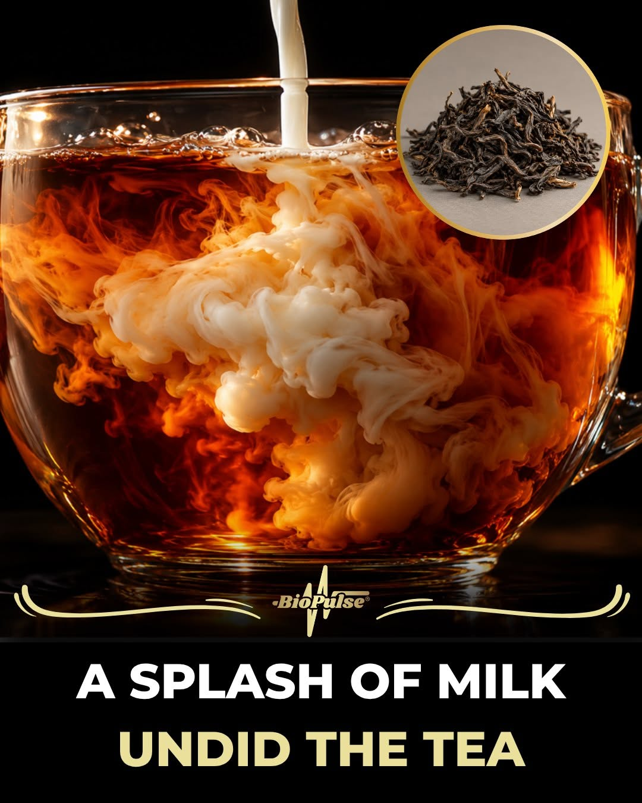

Black tea improved artery function in a Berlin trial, but adding milk erased the benefit
A European Heart Journal study (2007) from Charite Berlin had 16 healthy postmenopausal women drink black tea, tea with skimmed milk, or water on three days. Flow-mediated dilation improved with plain tea but the benefit disappeared with milk. Rat artery experiments showed tea boosts nitric oxide and milk caseins block it. Louis notes many studies show polyphenols improve FMD.